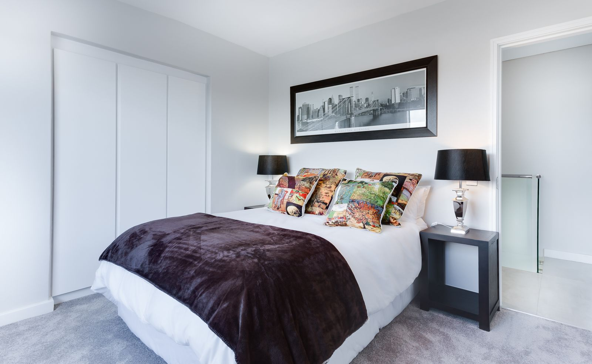
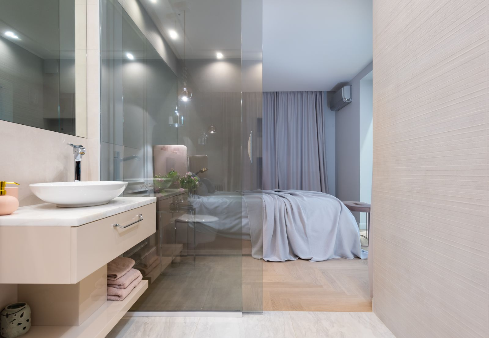

Better Sleep Starts
With Understanding.
Sleep problems can compromise daytime energy, cognitive focus, nocturnal breathing, physical recovery, and cardiovascular longevity. Our physician-led clinic provides comprehensive clinical evaluations and diagnostic sleep studies to pinpoint the exact physiological causes of sleep disruption.

Understanding Your Sleep Changes Everything.
Restorative sleep is not simply a period of inactivity; it is an active, essential physiological state that regulates neurocognitive consolidation, cardiovascular pressure, immune resilience, and metabolic balance. When sleep architecture is repeatedly disrupted, daytime fatigue is usually only the visible indicator of deeper underlying physiological stress.
Persistent Tiredness
Unrefreshed awakening, morning grogginess, or midday energy deficits despite adequate hours in bed.
Breathing Interruptions
Chronic loud snoring, witnessed gasping episodes, or nocturnal choking sounds noted by partners.
Sleep Initiation Difficulty
Racing cognitive thoughts, prolonged sleep latency, or inability to wind down at night.
Frequent Awakenings
Fragmented nocturnal sleep, nocturnal restlessness, or early morning awakenings with inability to fall back asleep.

Restorative sleep cycles support daytime cognitive clarity, cardiovascular health, and emotional resilience.
Sleep Care, From Evaluation to Treatment.
Our clinical services cover the complete continuum of sleep medicine: from initial diagnostic polysomnography to positive airway pressure therapy, behavioral sleep interventions, and longitudinal follow-up care.

Overnight Sleep Studies & Telemetry
Diagnostic polysomnography (PSG) records neurophysiological and cardiorespiratory metrics during natural sleep, including electroencephalography (EEG), airflow patterns, oxygen saturation, and body positions. We also offer calibrated Home Sleep Apnea Testing (HSAT) for qualifying patients.

Precision CPAP Therapy & Titration
Continuous Positive Airway Pressure (CPAP) pneumatic splints maintain an open upper airway during sleep. Our clinical team works personally with you to calibrate pressure levels, minimize mask leak, and optimize comfort for sustainable nightly compliance.
Behavioral Sleep Medicine & CBT-I
Cognitive Behavioral Therapy for Insomnia (CBT-I) is the clinically validated first-line treatment for chronic sleeplessness. By retraining conditioned sleep arousal, establishing stimulus control, and consolidating sleep drive, patients re-establish restorative natural sleep cycles without dependence on sedative medications.
Longitudinal Management & Adherence
Effective sleep medicine does not end with initial equipment or recommendations. Our dedicated clinicians monitor adherence telemetry, conduct regular 30, 60, and 90-day clinical checkpoints, and adapt therapies as your life, weight, or schedule evolves.
A Clear Path From Concern to Care.
Navigating sleep health should be straightforward and reassuring. Here is how our clinical team guides you through every step of diagnostic evaluation and treatment.

Consultation
Thorough review of your symptoms, nocturnal schedule, and medical background.
Sleep Assessment
Clinical screening of airway anatomy, sleepiness scale, and testing qualification.
Sleep Study
Attended overnight polysomnography or calibrated home testing kit.
Results & Review
Dedicated physician appointment to discuss your telemetry report and findings.
Treatment Plan
Individualized prescription: CPAP calibration, oral appliance, or CBT-I.
Follow-up
Continuous adherence monitoring, mask comfort checks, and ongoing sleep health.

Expertise Built Around Better Sleep.
Accurate diagnosis in sleep medicine requires detailed biometric interpretation, an understanding of upper airway dynamics, and close patient listening. Our clinical team evaluates each patient individually, avoiding generic recommendations in favor of evidence-based, customized medical solutions.

Start Understanding Your Sleep.
Whether you are concerned about persistent exhaustion, chronic snoring, or daytime sleepiness, our clinical sleep medicine team is here to help you regain restorative nights and energized days.